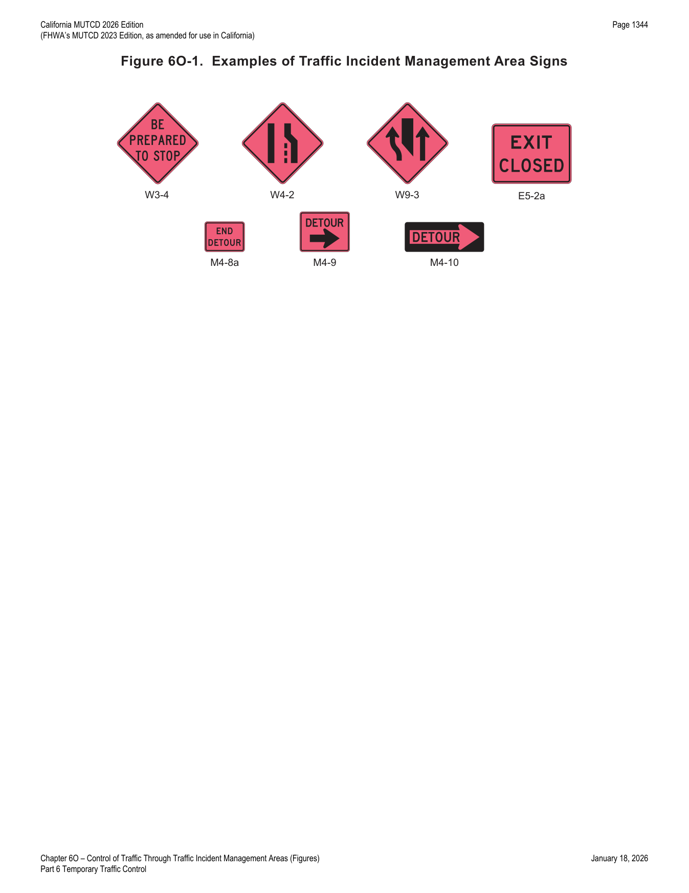
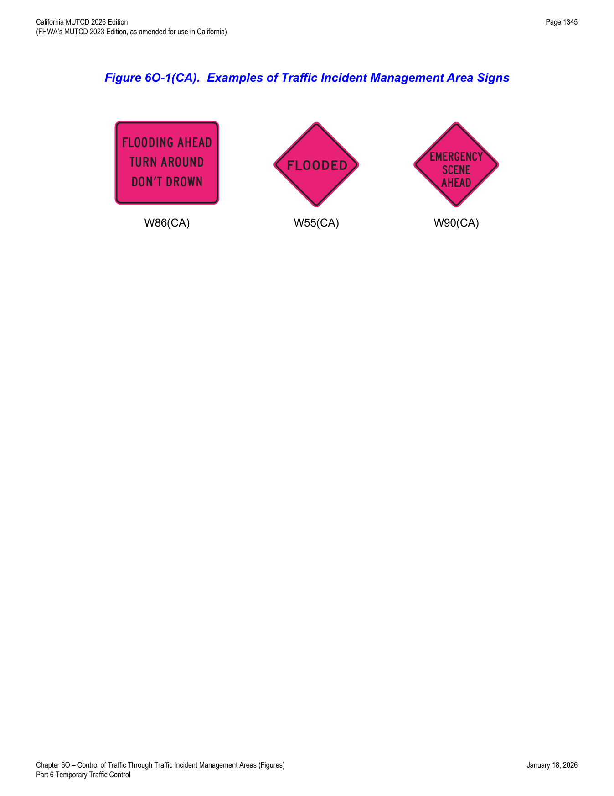

Part 6 · Temporary Traffic Control · Chapter 6O
Control of Traffic Through Traffic Incident Management Areas
TTC principles for the unplanned, time-critical world of traffic incident management — the three incident-duration classes (major, intermediate, minor), emergency-vehicle lighting practices, and California's flood- and emergency-scene warning signs.
6O.01General
- 01The National Incident Management System (NIMS) requires the use of the Incident Command System (ICS) at traffic incident management scenes.
- 02A traffic incident is an emergency road user occurrence, a natural disaster, or other unplanned event that affects or impedes the normal flow of traffic.
- 03A traffic incident management area is an area of a highway where temporary traffic controls are installed, as authorized by a public authority or the official having jurisdiction of the roadway, in response to a road user incident, natural disaster, hazardous material spill, or other unplanned incident. It is a type of TTC zone and extends from the first warning device (such as a sign, light, or cone) to the last TTC device or to a point where vehicles return to the original lane alignment and are clear of the incident.
- 04Traffic incidents can be divided into three general classes of duration, each of which has unique traffic control characteristics and needs. These classes are: (A) Major — expected duration of more than 2 hours, (B) Intermediate — expected duration of 30 minutes to 2 hours, and (C) Minor — expected duration under 30 minutes.
- 05The primary functions of TTC at a traffic incident management area are to inform road users of the incident and to provide guidance information on the path to follow through the incident area. Alerting road users and establishing a well-defined path to guide road users through the incident area will serve to protect the incident responders and those involved in working at the incident scene and will aid in moving road users expeditiously past or around the traffic incident, will reduce the likelihood of secondary traffic crashes, and will preclude unnecessary use of the surrounding local road system. Examples include a stalled vehicle blocking a lane, a traffic crash blocking the traveled way, a hazardous material spill along a highway, and natural disasters such as floods and severe storm damage.
- 06In order to reduce response time for traffic incidents, highway agencies, appropriate public safety agencies (law enforcement, fire and rescue, emergency communications, emergency medical, and other emergency management), and private sector responders (towing and recovery and hazardous materials contractors) should mutually plan for occurrences of traffic incidents along the major and heavily traveled highway and street system.
- 07On-scene responder organizations should train their personnel in TTC practices for accomplishing their tasks in and near traffic and in the requirements for traffic incident management contained in this Manual. On-scene responders should take measures to move the incident off the traveled roadway or to provide for appropriate warning. All on-scene responders and news media personnel should constantly be aware of their visibility to oncoming traffic and wear high-visibility apparel. Refer to Section 6B.05 for details on high-visibility apparel requirements. Planning and training should include incorporation of estimated time durations to clear the event as part of their initial incident estimate. When events are deemed as probable Major Traffic Incidents that could generate prolonged lane or road closures, notification of all affected agencies should be initiated as part of the initial incident report that is provided to the emergency communications center who would then be responsible for making notifications to appropriate state, regional, and local agencies and resources for the purpose of ramping up and responding as quickly as possible thus facilitating a more rapid transition from emergency TTC to an MUTCD-compliant TTC zone when warranted.
- 08Emergency vehicles arriving at an incident should be positioned in a manner that attempts to protect both the responders performing their duties and road users traveling through the incident scene, while minimizing, to the extent practical, disruption of the adjacent traffic flow. Emergency vehicle positions should optimize traffic flow through the incident scene. All emergency vehicles that subsequently arrive should be positioned in a manner that does not interfere with the established temporary traffic flow.
- 09Responders arriving at a traffic incident should estimate the magnitude of the traffic incident, the expected time duration of the traffic incident, and the expected vehicle queue length, and then should set up the appropriate temporary traffic controls for these estimates.
- 10Warning and guide signs used for TTC traffic incident management situations may have a black legend and border on a fluorescent pink background (see Figure 6O-1).
- 10aSigns used for regular TTC (black legend and border on orange or fluorescent orange background) are also acceptable. Truck or trailer mounted Portable Changeable Message (PCMS) signs are effective tools for traffic incident management.
- 11While some traffic incidents might be anticipated and planned for, emergencies and disasters might pose more severe and unpredictable problems. The ability to quickly install proper temporary traffic controls might greatly reduce the effects of an incident, such as secondary crashes or excessive traffic delays. An essential part of fire, rescue, spill clean-up, highway agency, and enforcement activities is the proper control of road users through the traffic incident management area in order to protect responders, victims, and other personnel at the site. These operations might need corroborating legislative authority for the implementation and enforcement of appropriate road user regulations, parking controls, and speed zoning. It is desirable for these statutes to provide sufficient flexibility in the authority for, and implementation of, TTC to respond to the needs of changing conditions found in traffic incident management areas.
- 12For traffic incidents, particularly those of an emergency nature, TTC devices on hand may be used for the initial response as long as they do not themselves create unnecessary additional hazards.
- 13The establishment, maintenance, and prompt removal of lane diversions can be effectively managed by interagency planning that includes representatives of highway and public safety agencies.
- 14All traffic control devices needed to set up the TTC at a traffic incident should be available so that they can be readily deployed for all major traffic incidents. The TTC should include the proper traffic diversions, tapered lane closures, and upstream warning devices to alert traffic approaching the queue and to encourage early diversion to an appropriate alternative route.
- 15Attention should be paid to the upstream end of the traffic queue such that warning is given to road users approaching the back of the queue.
- 16If manual traffic control is needed, it should be provided by qualified flaggers or uniformed law enforcement officers.
- 17If flaggers are used to provide traffic control for an incident management situation, the flaggers may use appropriate traffic control devices that are readily available or that can be brought to the traffic incident scene on short notice.
- 18When light sticks or flares are used to establish the initial traffic control at incident scenes, channelizing devices (see Section 6K.01) should be installed as soon thereafter as practical.
- 19The light sticks or flares may remain in place if they are being used to supplement the channelizing devices.
- 20The light sticks, flares, and channelizing devices should be removed after the incident is terminated.
In practice, the operative sequence at any incident scene is: get initial control up fast with whatever is on hand (flares, light sticks, on-hand devices) without creating new hazards, then transition to standard channelizing devices as soon as practical, then — for events likely to become Major — escalate promptly to a full MUTCD-compliant TTC zone rather than leaving the improvised setup in place.
6O.02Major Traffic Incidents
- 01Major traffic incidents are typically traffic incidents involving hazardous materials, fatal traffic crashes involving numerous vehicles, and other natural or man-made disasters. These traffic incidents typically involve closing all or part of a roadway facility for a period exceeding 2 hours.
- 02If the traffic incident is anticipated to last more than 24 hours, applicable procedures and devices set forth in other Chapters of Part 6 should be used.
- 03A road closure can be caused by a traffic incident such as a road user crash that blocks the traveled way. Road users are usually diverted through lane shifts or detoured around the traffic incident and back to the original roadway. A combination of traffic engineering and enforcement preparations is needed to determine the detour route, and to install, maintain, or operate, and then to remove the necessary traffic control devices when the detour is terminated. Large trucks are a significant concern in such a detour, especially when detouring them from a controlled-access roadway onto local or arterial streets.
- 04During traffic incidents, large trucks might need to follow a route separate from that of automobiles because of bridge, weight, clearance, or geometric restrictions. Also, vehicles carrying hazardous material might need to follow a different route from other vehicles.
- 05Some traffic incidents such as hazardous material spills might require closure of an entire highway. Through road users must have adequate guidance around the traffic incident. Maintaining good public relations is desirable. The cooperation of the news media in publicizing the existence of, and reasons for, traffic incident management areas and their TTC can be of great assistance in keeping road users and the general public well informed.
In practice, the 24-hour threshold in Paragraph 02 is the trigger for switching from incident-response TTC devices to the standard planned-work Part 6 procedures (signing, staging, etc.) used elsewhere in this manual — a Major incident that clears in 3 hours is handled very differently than one still active the next day.
6O.03Intermediate Traffic Incidents
- 01Intermediate traffic incidents typically affect travel lanes for a time period of 30 minutes to 2 hours, and usually require traffic control on the scene to divert road users past the blockage. Full roadway closures might be needed for short periods during traffic incident clearance to allow traffic incident responders to accomplish their tasks.
6O.04Minor Traffic Incidents
- 01Minor traffic incidents are typically disabled vehicles and minor crashes that result in lane closures of less than 30 minutes. On-scene responders are typically law enforcement and towing companies, and occasionally highway agency service patrol vehicles.
- 02Diversion of traffic into other lanes is often not needed or is needed only briefly. It is not generally possible or practical to set up a lane closure with traffic control devices for a minor traffic incident. Traffic control is the responsibility of on-scene responders.
- 03When a minor traffic incident blocks a travel lane, the vehicles involved in the incident should be moved from the blocked lane to the shoulder as quickly as possible.
In practice, the three incident classes (Major >2 hours, Intermediate 30 min-2 hours, Minor <30 min) each imply a fundamentally different TTC posture: Minor incidents rely on quick "move it to the shoulder" clearance by on-scene responders, not a formal device layout, while Major incidents warrant the full detour/diversion planning apparatus described in Section 6O.02.
6O.05Use of Emergency-Vehicle Lighting
- 01The use of emergency-vehicle lighting (such as high-intensity rotating, flashing, oscillating, or strobe lights) is essential, especially in the initial stages of a traffic incident, for the safety of emergency responders and persons involved in the traffic incident, as well as road users approaching the traffic incident. Emergency-vehicle lighting, however, provides warning only and provides no effective traffic control. The use of too many lights at an incident scene can be distracting and can create confusion for approaching road users, especially at night. Road users approaching the traffic incident from the opposite direction on a divided facility are often distracted by emergency-vehicle lighting and slow their vehicles to look at the traffic incident posing a hazard to themselves and others traveling in their direction.
- 02The use of emergency-vehicle lighting can be reduced if good traffic control has been established at a traffic incident scene. This is especially true for major traffic incidents that might involve a number of emergency vehicles. If good traffic control is established through placement of advance warning signs and traffic control devices to divert or detour traffic, then public safety agencies can perform their tasks on scene with minimal emergency-vehicle lighting.
- 03Public safety agencies should examine their policies on the use of emergency-vehicle lighting, especially after a traffic incident scene is secured, with the intent of reducing the use of this lighting as much as possible while not endangering those at the scene. Special consideration should be given to reducing or extinguishing forward facing emergency-vehicle lighting, especially on divided roadways, to reduce distractions to oncoming road users.
- 04Because the glare from floodlights or vehicle headlights can impair the nighttime vision of approaching road users, any floodlights or vehicle headlights that are not needed for illumination, or to provide notice to other road users of an incident response vehicle being in an unexpected location, should be turned off at night.
In practice, the key insight of this section is counterintuitive: more emergency lighting is not always safer. Emergency-vehicle lighting is warning only, not traffic control — it can distract opposite-direction drivers on a divided facility into rubbernecking, so agencies are directed to reduce lighting (especially forward-facing) once a scene is secured and proper TTC has been established.
6O.101(CA)FLOODING AHEAD TURN AROUND DON'T DROWN W86(CA) Sign
- 01The Federal Highway Administration has encouraged use of the phrase FLOODING AHEAD TURN AROUND DON'T DROWN as an official incident management sign.
- 02The FLOODING AHEAD TURN AROUND DON'T DROWN (W86(CA)) sign (refer to Figure 6O-1(CA)) may be deployed to warn during times when low-water crossings, bridges, or culverts cannot pass high flood flows.
- 03When used, the W86(CA) sign shall be mounted on temporary sign holders, not on barricades.
- 04The W86(CA) sign should be deployed at locations where stream waters flooding across a road have made passage unsafe.
- 05The FLOODED (W55(CA)) sign (refer to Figure 6O-1(CA)) should be used in advance of locations where the highway is flooded.
- 06The W55(CA) signs shall be removed or covered when the condition no longer exists.
6O.102(CA)EMERGENCY SCENE AHEAD W90(CA) Sign
- 01The Federal Highway Administration has encouraged use of the phrase EMERGENCY SCENE AHEAD as an official incident management sign.
- 02The EMERGENCY SCENE AHEAD (W90(CA)) sign (refer to Figure 6O-1(CA)) may be deployed to warn of an incident management scene ahead.
- 03If used, the W90(CA) sign shall be mounted on temporary sign holders, not on barricades.
- 04The W90(CA) sign should be deployed at locations upstream of the traffic queue that has formed due to incident management.


In practice, both California-specific signs share a common mounting rule that is easy to overlook: W86(CA), W55(CA), and W90(CA) must be mounted on temporary sign holders — never affixed to barricades — likely to keep them clearly distinguishable as warning signs rather than blending into a barricade's own striping.
★ Key Takeaways — Chapter 6O
- Three incident duration classes drive the TTC response: Major (>2 hours), Intermediate (30 minutes-2 hours), Minor (<30 minutes) — each with a different expected level of formal TTC device deployment.
- Incident management signs may use a black legend/border on fluorescent pink background (Figure 6O-1) as an alternative to the standard orange TTC color, signaling "emergency/incident" rather than "planned work."
- Initial response may use whatever TTC devices are on hand (provided they create no new hazard); channelizing devices should replace flares/light sticks as soon as practical; incidents anticipated to exceed 24 hours should transition to standard Part 6 procedures.
- Emergency-vehicle lighting is warning only, not traffic control — agencies should reduce lighting (especially forward-facing, on divided roadways) once good TTC is established at the scene, to avoid distracting oncoming drivers into rubbernecking.
- Minor incidents rely on quick on-scene responder action (move vehicles to the shoulder) rather than formal TTC device layouts; Major incidents require full detour/diversion planning, including separate routing for large trucks and hazardous-material loads where needed.
- California-specific signs W86(CA) (FLOODING AHEAD TURN AROUND DON'T DROWN), W55(CA) (FLOODED), and W90(CA) (EMERGENCY SCENE AHEAD) must be mounted on temporary sign holders, never on barricades; W55(CA) must be removed/covered once the flooding condition no longer exists.